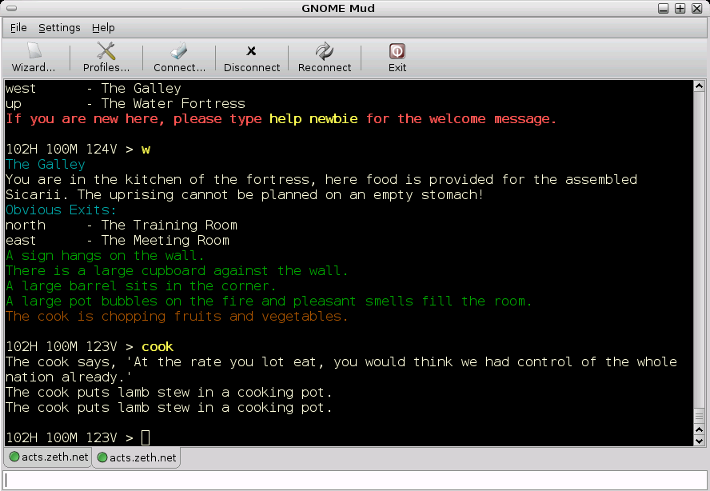
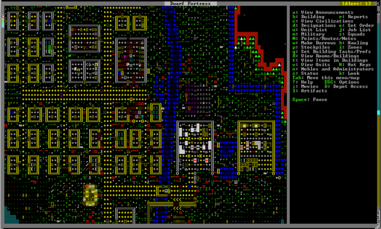

Dwarlixir
A story of mistakes
Who you're listening to
Aldric "Trevoke" Giacomoni
Why this talk? 1/2
I know it's everybody's sin
You got to lose to know
How to win
― Dream On, Aerosmith
Why this talk? 2/2
I look at the world and I notice it's turning
While my guitar gently weeps
With every mistake we must surely be learning
Still my guitar gently weeps
― The Beatles, While My Guitar Gently Weeps
Establishing context
A mix of a MUD and Dwarf Fortress
What's a MUD?
What's Dwarf Fortress?
So what we're gonna aim for is…
A world map, with time passing, creatures that can move, die, and reproduce.
And a telnet connection for people
And then I balance out the ecosystem
I'm sure that'll be easy
Roadmap
[0/6][ ]algorithm improvement[ ]extreme local state[ ]distributed state[ ]schedulers and the "tick"[ ]flooding processes[ ]linux oom killer
Algorithm improvement
Misconception
A list is like an array
Story

Graph

Impact
Lots of data structures initialized
Lots of data being copied
VERY SLOW
Fix

Roadmap
[1/6][X]algorithm improvement[ ]extreme local state[ ]distributed state[ ]schedulers and the "tick"[ ]flooding processes[ ]linux oom killer
Extreme local state
Misconception
extreme local state has got to be better than global state
Story
"Actor model?" Moar like extreme object-oriented, amirite?
Impact
A → B B → C C → A
Deadlocks
Fix 1
Some state is global.
I know it's a boring answer.
Fix 2
Create
Roadmap
[2/6][X]algorithm improvement[X]extreme local state[ ]distributed state[ ]schedulers and the "tick"[ ]flooding processes[ ]linux oom killer
Distributed state
Misconception
Fewer synchronous calls will reduce the opportunity of deadlocks
Story
Moar local state in moar local places
Impact
Accidentally multiple sources of truths
Roadmap
[3/6][X]algorithm improvement[X]extreme local state[X]distributed state[ ]schedulers and the "tick"[ ]flooding processes[ ]linux oom killer
Schedulers and the "tick"
Misconception
There won't be a sizable impact to sending lots of processes a message at the same time
Story
The tick (not the blue one)
Impact
All schedulers triggered at same time - literally a heartbeat of intense CPU usage on the box
Fix
More or less "any other way"
I opted for "all manage their own ticks"
Never mind how untestable that makes the system
Roadmap
[4/6][X]algorithm improvement[X]extreme local state[X]distributed state[X]schedulers and the "tick"[ ]flooding processes[ ]linux oom killer
flooding processes
Misconception
It's hard to send a process too many messages
Impact
Roadmap
[5/6][X]algorithm improvement[X]extreme local state[X]distributed state[X]schedulers and the "tick"[X]flooding processes[ ]linux oom killer
linux OOM killer
Misconception
My world simulation won't grow unboundedly in RAM usage
Story
"Emergent Design"
Impact
The operating system does what it needs to do to stay up
Roadmap
[6/6][X]algorithm improvement[X]extreme local state[X]distributed state[X]schedulers and the "tick"[X]flooding processes[X]linux oom killer